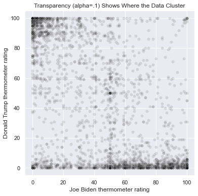
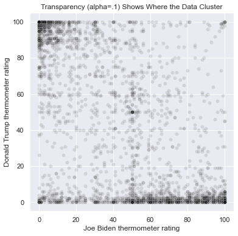

11. Static Data Visualizations#
11.1. Introduction: What Makes For a Good Data Visualization?#
Data visualizations are graphical representations of distributions and relationships in the data. They are essential tools for exploratory data analysis (EDA), and they are important ways to communicate the results of statistical and machine learning models. In Exploratory Data Analysis, John W. Tukey argues that visualizations help us to see not only problems in the data, but also can reveal patterns that theory alone never would have led us to examine.
Visualizations are among the best tools we have for communication. Data and statistics can be technical and dependent on terminology and jargon that are inaccessable without a great deal of training. If we need to show our data and our results to a manager, to a client, to the public, or to another audience, we can use visualizations to quickly and clearly tell the stories that the evidence in our data supports. Pictures are also efficient: even if someone can understand a technical discussion, a good picture can convey the information more quickly than a table, and more accurately as well because we can better express the context surrounding a result with a visualization.
But like any mode of communication, there are more effective and less effective ways to visualize data. Some visualizations are confusing. Other visualizations are misleading. Our goal is to create graphics that tell a clear story that a general audience can quickly understand while taking steps to ensure that the data are presented accurately and in a way that does not mislead.
There are degrees of completion when designing a visualization. For the purposes of EDA, we ourselves might be the audience, so we can spend less time on writing descriptive labels and choosing the most aesthetically pleasing colors, shapes, and sizes for graphical elements. We can stick to defaults more often even if the defaults are ugly, or when they might be misunderstood by someone else. These exploratory graphics can accomplish Tukey’s goals for EDA: finding anomolies and problems in the data and revealing unexpected patterns. If our purpose is to use the graphic to communicate with an audience, however, then we will take steps to improve the labels and aesthetic elements of the visualization.
There are many words for a data visualization. In the following discussion, we will use the words visualization, graphic, graph, plot, and figure interchangably.
11.1.1. Aesthetics, Data, and Scales#
In chapter 2 of Fundamentals of Data Visualization, Claus O. Wilke explains that a data visualization has three parts: aesthetics, data, and scales. Aesthetics are the visual elements of graphic: the axes, the plot area, the shapes and colors of different sizes that appear in the plot area, and the labels. Scales are functions that map the data we are trying to describe to aesthetics. For example, in a scatterplot, we illustrate the relationship between two continuous-valued features by setting the values of each feature to be the x and y coordinates of a point to be plotted on a Cartesian plane.


The coordinates of the points are the data, and the rule that sets the data as the x and y coordinates is the scale. In Randall Munroe’s scatterplot, he plots the fruit by scores he gives each fruit for tastiness and for difficulty. In Zach Weinersmith’s scatterplot, he determines the amount of hatred someone must have for themselves and for others in order to drink each of the alcohols. Although both are subjective and funny, there is underlying data represented in each graph, and the scale sets the points at the coordinates defined by the data. Aesthetics include the choice of shape for each point - a small hollow circle, a solid circle, squares, triangles, or another shape such as pictures of fruits - as well as the size, color, and transparency of the points. The aesthetics also include elements beyond the points: the color of the plot area, whether to include vertical and horizontal guiding lines in the background, the range of the axes, how to label the axis values (if at all), the axis labels, whether to include a legend, and the title of the graph.
When constructing a visualization, the part of the graph we select first is the data. We have to acquire the data we need and manipulate the data so that we can perform EDA. Second, we choose the scale. The scales are generally set by the type of graph we choose. Every scatterplot, for example, sets the two features as the coordinates of each point, and every barplot sets the height of the bars equal to the calculated frequency (or a different descriptive statistic) for each category. Once we choose a graph, we won’t be able to change the way data is mapped to aesthetics. Finally, once we’ve set the data and the scales of the graph, we can choose the aesthetics. Most of the guidance that exists regarding how to create an effective visualization focuses on the choice of graph type, which implies the scales, and on the aesthetics.
11.1.2. Edward Tufte’s “Fundamental Principles of Analytical Design”#
Edward Tufte is a statistician, computer scientist, and political scientist who became well known for writing guiding principles for data visualization, beginning with his book The Visual Display of Quantitative Information. Today he travels the country, teaching one-day (expensive) short courses on the topic of data visualization. He is a notorious critic of Microsoft Powerpoint, and he coined the term chartjunk to refer to “all visual elements in charts and graphs that are not necessary to comprehend the information represented on the graph, or that distract the viewer from this information.”
In Beautiful Evidence, Tufte presents six “Fundamental Principles of Analytical Design” (p. 122) which guide the choices visualization designers should make when choosing graph types and aesthetics. First, graphics must show “comparisons, contrasts, [or] differences” in the data (p. 127). A scatterplot shows differences between each of the rows in the data on the features that comprise the coordinates. A barplot compares one category of a feature to another on some dimension.
Second, graphs must show “causality, mechanism, explanation, [or] systemic structure” (p. 128). If the goal is to describe the relationship between two features, then an accurate portrayal of that relationship might be considered causal or an explanation if we take additional steps to account for confounding factors and if we are careful to correctly state which feature is the cause and which is the effect. If we cannot rise to the level of making a causal statement, then showing a relationship is still an illustration of the mechanism or systemic structure in the covariance of the features. Regardless of the reason for a correlation, a correlation exists and can be visualized.
Third, figures can and should “show multivariate data; that is, show more than 1 or 2 [features]” (p. 130). Different aesthetics make it possible for us to include more than two variables in one visualization. For example we can create a scatterplot in which the x-values represent people’s ages and the y-axis represents people’s personal incomes. We can change the colors of each point to represent each person’s gender, and we can use the shape of each point to represent the person’s political party affiliation. Other writers, including Wilke, caution against including too many features in one graphic as each additional feature makes the figure more confusing. Our goal should be to show as much of the data as possible without increasing the complexity of the figure too much.
Fourth, visualizations should “integrate words, numbers, [and] images” (p. 131). We can annotate graphs with words or numbers: for example, by labeling points in a scatterplot, as in both the fruit and alcohol scatterplots shown above, or by labeling bars in a barplot with the height of each bar. We can use images as well, for example by placing images of flags onto bars in a barplot that shows cross-national differences.
Fifth, graphics should be presented along with documentation to help the audience understand the meaning of various aesthetic elements. If we use colors to mark points in a scatterplot as representing a woman or a man, then there should be an accompanying legend that makes the colors’ meanings clear. We can also use captions underneath a figure and explanatory text to make sure that all the distinct mappings from data to aesthetics are understandable.
Finally, Tufte holds the following principle above all of the others:
Analytical presentations ultimately stand or fall depending on the quality, relevance, and integrity of their content.
(p. 136). In other words, all of the work we’ve done to acquire and manipulate data is necessary for effective visualizations to be possible. If we have not collected high quality data, or if we have not properly cleaned the data, then no amount of attention paid to a figure’s aesthetics will make the figure into a worthwhile tool for communicating distributions and relationships in the data.
11.1.3. Claus O. Wilke’s Guide to Telling a Story and Making a Point#
We can use data visualizations to communicate findings within a dataframe to an outside audience. But we want the information contained within a visualization to be understood and remembered, and people in general do not process highly abstract information quickly, and they do not tend to remember it.
In chapter 29 of Fundamentals of Data Visualization, Claus O. Wilke recommends thinking about a crafting a narrative when constructing a data visualization. People understand and remember stories. Using a story to motivate and explain a visualization does not mean that we misrepresent the findings, but rather that we use the frame of a story to describe the findings, why they are important, and what the larger take-away points should be.
A narrative arc describes the organization and sequence of a story. The most well-known model of a narrative arc is Gustav Freytag’s pyramid: Exposition, Rising Action, Climax, Falling Action, and Denouement. An academic paper or a data analysis report can follow this model as well. The artcle begins with a statement of the topic and the research question (the exposition). The literature review reveals the unaddressed areas in which a novel contribution can be made (the rising action). The results provide an answer to the research question (the climax), and a subsequent discussion places the results in the larger context of the literature and describes further implications (falling action). The conclusion summarizes the most important points of the article (the denouement).
There are other models for narrative arcs other than Gustav Freytag’s. Kurt Vonnegut states:
There’s no reason why the simple shapes of stories can’t be fed into computers. They are beautiful shapes.
In the following talk, Vonnegut maps out the narrative arc of many different stories:
from IPython.display import IFrame
IFrame(src="https://www.youtube.com/embed/oP3c1h8v2ZQ", width="560", height="315")
Regardless of the specific model used to describe a story, stories should have a beginning, middle, and an end, and should set up a conflict (a research question) and resolve that conflict (with our findings). If we keep this structure in mind, we can prepare an audience to see our findings with other visualizations that help people understand the problem, and we can use visualizations to convey both our findings and their elaborations and implications.
If we think about visualizations as a means to tell a story, Wilke recommends that that we take steps to make the visualizations understandable and memorable. Although Tufte encourages us to include more than one or two features in a single figure, each additional feature makes it harder to understand the stories that other features describe. Wilke suggests that we think about the main take-home points we want our audience to understand, and to reduce the features in a single visualization to only those that speak directly to this story. He writes: “Never assume your audience can rapidly process complex visual displays.” That’s true both of general audiences and of audiences of people with specific technical training: complicated figures cause everyone to tune out.
Suppose that we create ten barplots with exactly the same formatting. Even if each of the ten plots are perfectly understandable and clear the points that each one makes may be lost in the noise of repeated, similar images. Wilke notes that it is important to make the figures more memorable by making them more distinct. First we can use color to highlight specific elements of a figure to emphasize points that are more important to the story. If one category among the bars is of special interest to us, we can use one color for that bar and a different color for all the others. If elements of the plot represent units with well-known images, we can use these images on the graph the way Randall Munroe uses pictures of fruits instead of points. These extra visual elements will make each figure stand out and be more memorable.
11.1.4. How (not) to Lie with Statistics#
How to Lie with Statistics by Darrell Huff is a short, funny, and classic book that describes many ways that statistics can be used to mislead an audience. The book was written in 1954, and has been reprinted many times since then.

Darrell Huff discusses the dangers of drawing conclusions from biased and undersized samples, using poorly-worded survey questions, confusing the mean, median, and mode, emphasizing the mean while ignoring the distribution, and making statements about correlation from evidence that only shows a correlation. He also discusses two ways that visualizations specifically can mislead, which he calls:
The Gee-Whiz Graph: a figure that manipulates the range of the y-axis to make it seem like a feature changes more or less than it actually does.
The One-Dimensional Picture: a graph that maps data to the height of images, but uses non-rectangular shapes to increase the area by a greater proportion than the difference in heights.
The idea of a one-dimensional picture is related to Wilke’s discussion of the principle of proportional ink in chapter 17 of Fundamentals of Data Visualization. The principle of proportional ink is
The sizes of shaded areas in a visualization need to be proportional to the data values they represent.
With a barplot, the images we use to represent the data are rectangles. If we double the height of a rectangle, we also double the area of a rectangle:
The principle of proportional ink is violated when doubling the height causes the area to increase by a factor other than 2. The human eye recognizes area first, so if the data are represented by the height, a change in area by a different factor misrepresents the data. Barplots do not violate the principle of proportional ink because of the specific property of rectangles that the height and area change with the same proportion. The same thing is not true of other shapes. For example, Darrell Huff uses the following image to represent a one-dimensional picture:

The data that are represented in this figure are monetary amounts, represented by the height of each money bag. The money bag on the right is twice the height of the money bag on the left. But because these shapes are not rectangles, the area of the money bag on the right is more than double the size of the money bag on the right. A figure like this conveys the incorrect notion that the money bag on the right is larger than it is.
When creating data visualizations, it is important to represent the data accurately by using a reasonable scale for the y-axis (generally by including 0 in this scale), and by using rectangular area to ensure that the principle of proportional ink is not violated.
11.1.5. Why Not Pie Charts?#
We will not be discussing the methodology to create pie charts. In general pie charts are considered poor ways to represent data, and many statisticians and data scientists bemoan the prevalence of pie charts in government and business. Walt Hickey, writing for Business Insider in 2013, phrases his opinion of pie charts in no uncertain terms:
The pie chart is easily the worst way to convey information ever developed in the history of data visualization.
Hickey’s argument reflects the argument of many statisticians and data scientists. First, if the goal of a data visualization is to present data in a clear way, pie charts can obscure the data because the human eye can measure distance better than angles. The following data can be represented in pie charts or barplots:
In the pie charts, the five quantities are represented by the angles in the slices of the circle. But it is hard to determine how much larger or smaller each slice is relative to the others, and sometimes it is hard to determine which of the slices is largest and smallest. In contrast, this information is clear in the barplots. Pie charts are often annotated by the numbers that each slice represents, but if the labels are necessary to read a pie chart then the chart itself is not needed as a reader can look at the labels alone.
Pie charts do uphold the principle of proportional ink because the area of a slice of a circle is given by the formula $\( \text{area} = \frac{\theta}{360}(\pi r^2) \)\( where \)\theta\( is the angle of the slice and \)r\( is the radius of the circle, which is constant for all slices. If we double the angle \)\theta\(, the area also doubles because: \)\( \frac{2 \times\theta}{360}(\pi r^2) = 2 \frac{\theta}{360}(\pi r^2) = 2(\text{area}).\)$ However, a common variant is a 3D piechart, as in the following example:
Because of the added base, 3D pie charts violate the principle of proportional ink. Notice that the light-blue slice on top of the circle has a larger angle than the red slice on the bottom, but more ink is devoted to the red slice than the light-blue one because of the perspective in the drawing. In addition, the tilted perspective turns the circle into an oval, which expands the angles on the top and bottom and compresses the angles on the sides. A 3D pie chart is misleading and confusing and should never be used.
There is one advantage of a pie chart. Pie charts show the proportion of each category to the total across categories, which barplots do not. That’s useful when the story we are trying to tell is that one category is much larger than all of the others and dominates the total when adding up all the slices. The following figure is one of the best examples of a pie chart:

In this figure, the story is that the United States spends much more on defense than any other country, and that China also spends more than any other country with the exception of the United States. Together the United States and China account for nearly half of the world’s defense spending. This pie chart is effective at making these points, but it is not effective at illustrating specific country-to-country comparisons without the numeric annotations.
11.2. Creating Data Visualizations in Python#
There are many distinct styles of data visualization that are well-suited for different kinds of data. Within these styles, there are many adaptions with different aesthetics. Each style involves fixing the scale - the function that maps data to aesthetics - of the visualization, so if we choose a barplot, for example, the height of the bars (or the length of the bars if the bars are oriented horizontally) are determined by the data we are trying to plot.
The five most important types of data visualization are barplots, scatterplots, line plots, distributional plots, and heatmaps. There are many examples of each type later in this chapter.
These visualizations can also be combined. For example, a scatterplot might attach histograms to the edges of the plot area that are opposite the x and y-axes to show the histograms for each of the two features in the scatterplot. There are other kinds of data visualizations as well, such as network plots to show the connections between nodes in a network. However, in this chapter we will only focus on the visualizations described above.
The following discussion illustrates the code to generate barplots, scatterplots, line plots, distributional plots, and heat maps using the matplotlib and seaborn packages in Python, as well as using the .plot() method from pandas. For each of these plots, we can change the aesthetics to change the appearance of the plot and include additional features in the plot. We will alter the aesthetics as needed to produce good-looking, accurate, and understandable visualizations. This discussion is not meant to be a comprehensive list of visualizations, but an introduction to the major coding systems available for plotting in Python. For more examples, see the matplotlib image gallery or the seaborn example gallery.
We can generate visualizations using matplotlib or seaborn, so how do we know which one to use? In what situations is one package better than the other?
Most researchers use both. seaborn is built on top of matplotlib, and it tends to produce prettier graphics with fewer lines of code than matplotlib, but it can be limited in terms of how much an individual visualization can be customized. matplotlib is very flexible, but the default aesthetics do not always look very elegant. In addition, pandas has a .plot() method that can be applied to a dataframe that uses shortcuts to generate figures from that dataframe. pandas does not have its own graphics engine: instead it directly connects to either matplotlib or to seaborn, although it uses a different syntax to do so.
The trickiest thing about visualization in Python is that matplotlib, seaborn, and the .plot() method in pandas are used interchangably because some graphs and aesthetics are only possible or are much easier to generate in one package. None of these packages is currently better across the board than the other two, and different packages are better for specific tasks. It can be hard to remember what works best from situation to situation. It is even more confusing because matplotlib, seaborn, and .plot() overlap in their syntax in some ways, and are different in other ways. The best way forward is to practice many data visualizations. The more we generate data visualizations, the better our instincts will get about which package to use when.
Traditionally, we use the pyplot module from matplotlib with the alias plt, and we use seaborn with the alias sns. We begin by loading the following packages:
import numpy as np
import pandas as pd
from matplotlib import pyplot as plt
import seaborn as sns
As with chapters 8 and 10, we will be working with the 2019 pilot study from the American National Election Study (ANES). To see how we prepared the data for analysis, or to see the tabular methods of EDA we employed on this dataset, see chapters 8 and 10 respectively. We load the cleaned data:
anes = pd.read_csv("https://github.com/jkropko/DS-6001/raw/master/localdata/anes_pilot2019_clean.csv")
anes.columns
Index(['caseid', 'liveurban', 'vote16', 'protest', 'vote',
'most_important_issue', 'confecon', 'ideology', 'partyID',
'universal_income', 'family_separation', 'free_college',
'forgive_loans', 'race', 'birthyr', 'sex', 'education', 'weight',
'fttrump', 'ftobama', 'ftbiden', 'ftwarren', 'ftsanders', 'ftbuttigieg',
'ftharris', 'ftblack', 'ftwhite', 'fthisp', 'ftasian', 'ftmuslim',
'ftillegal', 'ftjournal', 'ftnato', 'ftun', 'ftice', 'ftnra', 'ftchina',
'ftnkorea', 'ftmexico', 'ftsaudi', 'ftukraine', 'ftiran', 'ftbritain',
'ftgermany', 'ftjapan', 'ftisrael', 'ftfrance', 'ftcanada', 'ftturkey',
'ftrussia', 'ftpales', 'ftimmig', 'partisanship', 'ftbiden_level',
'age', 'age2', 'ftbiden_float', 'ftbiden_cat', 'ftbiden_str',
'prefersbiden', 'worried_econ', 'favor_both'],
dtype='object')
11.2.1. Barplots and How to Use matplotlib, seaborn, and the Dataframe .plot() Method#
Barplots are appropriate for describing the frequencies of a categorical feature. Each category gets a bar. The bars can be oriented vertically or horizontally, and the height or length each bar represents the data. Most often we plot the frequencies of categories this way, but we can also plot other conditional descriptive statistics such as the within-category mean of a continuous feature. We can overlay more than one feature with the same categories by stacking the bars on top of one another or by placing them side by side.
We can create a barplot using matplotlib, seaborn, or the .plot() method for a pandas dataframe. We can use any of these options to create a visualization. The options differ in that some tasks easier or harder when using a particular package, and specific options might produce graphics that look better or worse.
11.2.1.1. Vertical and Horizontal Barplots, Figure Size, Labels, Titles, and Colors#
To generate a barplot using matplotlib, we start by creating a series that contains only the numbers we intend to plot. For example, we can count the values of each category of confecon, how worried a person is about the state of the economy, using the .value_counts() method. The barplot we create with matplotlib will order the bars in the same way they appear with .value_counts(), so we can first rearrange the categories in the order we want, then we can use the .sort_index() method to make sure that the categories appear in this order:
anes['confecon'] = anes['confecon'].astype('category')
anes['confecon'] = anes['confecon'].cat.reorder_categories(['Not at all worried',
'A little worried',
'Moderately worried',
'Very worried',
'Extremely worried'])
mybars = anes.confecon.value_counts().sort_index()
mybars
confecon
Not at all worried 764
A little worried 847
Moderately worried 871
Very worried 431
Extremely worried 252
Name: count, dtype: int64
Now that the counts are stored in mybars, the simplest barplot uses the plt.bar() function. For this image and for all the images presented below, the image will appear automatically in a Jupyter notebook. In a Python script we would have to also type plt.show() in order to display the figure. plt.bar() takes two arguments: the categories, stored in the .index attribute of mybars, and the values, stored in .values:
plt.bar(mybars.index, mybars.values)
<BarContainer object of 5 artists>
This plot leaves a lot of be desired. First, the category labels run into each other. To solve this problem, we can increase the size of the figure. We can change the size by typing
plt.figure(figsize(a,b))
prior to the call to plt.bar() or to another plotting function. Here a and b are numbers, in inches. If the window can’t contain the proportions, the figure is scaled down proportionally. The default dimensions for a plot are 6.4 inches wide and 4.8 inches high. To create a figure 15 inches wide and 6 inches high, for example, we can type:
plt.figure(figsize=(15, 6))
plt.bar(mybars.index, mybars.values)
<BarContainer object of 5 artists>
Now we can clearly see the individual bar labels. Another way to accomodate longer bar labels is to orient the bars horizontally, leaving plenty of room for the labels on the left. To generate horizontal bars, First we use plt.barh() instead of plt.bar():
plt.figure(figsize=(10, 5))
myplot = plt.barh(mybars.index, mybars.values)
There are many ways that we can make this figure more understandable. First, we can add axis labels. To add a label to the x and y axes, we type
plt.ylabel('a label')
plt.xlabel('another label')
after the call to plt.bar(), plt.barh(), or another plotting function. To add an overall title that will appear above the graph, we type
plt.title('a title')
after the plotting function. For example, we can add axis labels and a title to our horizontal barplot:
plt.figure(figsize=(10, 5))
plt.barh(mybars.index, mybars.values)
plt.ylabel('Level of worry')
plt.xlabel('Number of people')
plt.title('Amount of Worry About the Current State of the Economy')
Text(0.5, 1.0, 'Amount of Worry About the Current State of the Economy')
To change the color of the bars, use the color argument inside the plotting function. We can set the color of the bars to red, or to many other colors:
plt.figure(figsize=(10, 5))
plt.barh(mybars.index, mybars.values, color='red')
plt.ylabel('Level of worry')
plt.xlabel('Number of people')
plt.title('Amount of Worry About the Current State of the Economy')
Text(0.5, 1.0, 'Amount of Worry About the Current State of the Economy')
To set different colors for every bar, we can pass a list of colors. That’s useful if we want to emphasize particular bars, such as the ones for “very worried” and “extremely worried”:
plt.figure(figsize=(10, 5))
plt.barh(mybars.index, mybars.values,
color=['blue', 'blue', 'blue', 'red', 'red'])
plt.ylabel('Level of worry')
plt.xlabel('Number of people')
plt.title('Amount of Worry About the Current State of the Economy')
Text(0.5, 1.0, 'Amount of Worry About the Current State of the Economy')
To create a barplot with seaborn, we use the sns.barplot() function. There are two ways to use this function. We can pass a series directly to the x argument to define the categories and another series to the y argument to define the values:
plt.figure(figsize=(10, 6))
sns.barplot(x=mybars.index, y=mybars.values)
<Axes: xlabel='confecon'>
Alternatively, if the data exists in a dataframe, we can pass the x and y columns to the x and y arguments, and the dataframe to the data argument:
mybars_df = mybars.reset_index()
mybars_df
| confecon | count | |
|---|---|---|
| 0 | Not at all worried | 764 |
| 1 | A little worried | 847 |
| 2 | Moderately worried | 871 |
| 3 | Very worried | 431 |
| 4 | Extremely worried | 252 |
plt.figure(figsize=(10, 6))
sns.barplot(x='index', y='confecon', data=mybars_df)
---------------------------------------------------------------------------
ValueError Traceback (most recent call last)
Cell In[13], line 2
1 plt.figure(figsize=(10, 6))
----> 2 sns.barplot(x='index', y='confecon', data=mybars_df)
File ~/.pyenv/versions/3.12.5/lib/python3.12/site-packages/seaborn/categorical.py:2341, in barplot(data, x, y, hue, order, hue_order, estimator, errorbar, n_boot, seed, units, weights, orient, color, palette, saturation, fill, hue_norm, width, dodge, gap, log_scale, native_scale, formatter, legend, capsize, err_kws, ci, errcolor, errwidth, ax, **kwargs)
2338 if estimator is len:
2339 estimator = "size"
-> 2341 p = _CategoricalAggPlotter(
2342 data=data,
2343 variables=dict(x=x, y=y, hue=hue, units=units, weight=weights),
2344 order=order,
2345 orient=orient,
2346 color=color,
2347 legend=legend,
2348 )
2350 if ax is None:
2351 ax = plt.gca()
File ~/.pyenv/versions/3.12.5/lib/python3.12/site-packages/seaborn/categorical.py:67, in _CategoricalPlotter.__init__(self, data, variables, order, orient, require_numeric, color, legend)
56 def __init__(
57 self,
58 data=None,
(...)
64 legend="auto",
65 ):
---> 67 super().__init__(data=data, variables=variables)
69 # This method takes care of some bookkeeping that is necessary because the
70 # original categorical plots (prior to the 2021 refactor) had some rules that
71 # don't fit exactly into VectorPlotter logic. It may be wise to have a second
(...)
76 # default VectorPlotter rules. If we do decide to make orient part of the
77 # _base variable assignment, we'll want to figure out how to express that.
78 if self.input_format == "wide" and orient in ["h", "y"]:
File ~/.pyenv/versions/3.12.5/lib/python3.12/site-packages/seaborn/_base.py:634, in VectorPlotter.__init__(self, data, variables)
629 # var_ordered is relevant only for categorical axis variables, and may
630 # be better handled by an internal axis information object that tracks
631 # such information and is set up by the scale_* methods. The analogous
632 # information for numeric axes would be information about log scales.
633 self._var_ordered = {"x": False, "y": False} # alt., used DefaultDict
--> 634 self.assign_variables(data, variables)
636 # TODO Lots of tests assume that these are called to initialize the
637 # mappings to default values on class initialization. I'd prefer to
638 # move away from that and only have a mapping when explicitly called.
639 for var in ["hue", "size", "style"]:
File ~/.pyenv/versions/3.12.5/lib/python3.12/site-packages/seaborn/_base.py:679, in VectorPlotter.assign_variables(self, data, variables)
674 else:
675 # When dealing with long-form input, use the newer PlotData
676 # object (internal but introduced for the objects interface)
677 # to centralize / standardize data consumption logic.
678 self.input_format = "long"
--> 679 plot_data = PlotData(data, variables)
680 frame = plot_data.frame
681 names = plot_data.names
File ~/.pyenv/versions/3.12.5/lib/python3.12/site-packages/seaborn/_core/data.py:58, in PlotData.__init__(self, data, variables)
51 def __init__(
52 self,
53 data: DataSource,
54 variables: dict[str, VariableSpec],
55 ):
57 data = handle_data_source(data)
---> 58 frame, names, ids = self._assign_variables(data, variables)
60 self.frame = frame
61 self.names = names
File ~/.pyenv/versions/3.12.5/lib/python3.12/site-packages/seaborn/_core/data.py:232, in PlotData._assign_variables(self, data, variables)
230 else:
231 err += "An entry with this name does not appear in `data`."
--> 232 raise ValueError(err)
234 else:
235
236 # Otherwise, assume the value somehow represents data
237
238 # Ignore empty data structures
239 if isinstance(val, Sized) and len(val) == 0:
ValueError: Could not interpret value `index` for `x`. An entry with this name does not appear in `data`.
<Figure size 1000x600 with 0 Axes>
To orient a seaborn barplot horizontally, simply interchange the x and y features:
plt.figure(figsize=(10, 6))
sns.barplot(x='confecon', y='index', data=mybars_df)
<matplotlib.axes._subplots.AxesSubplot at 0x1a23d39d10>

Notice that in the barplots above the axes are mislabeled. seaborn graphics use the same functions as matplotlib to change the title and axes:
plt.figure(figsize=(10, 6))
sns.barplot(x='confecon', y='index', data=mybars_df)
plt.ylabel('Level of worry')
plt.xlabel('Number of people')
plt.title('Amount of Worry About the Current State of the Economy')
Text(0.5, 1.0, 'Amount of Worry About the Current State of the Economy')

Unlike matplotlib, seaborn uses different colors for each bar as a default simply because it is prettier. Edward Tufte would call this aesthetic choice “chartjunk”, however, because the colors do not map to any additional feature or have any meaning other than being nicer to look at. Different colors are fine, but to change them, use the palette argument as follows:
plt.figure(figsize=(10, 6))
sns.barplot(x='confecon', y='index', data=mybars_df,
palette = ['blue', 'blue', 'blue', 'red', 'red'])
plt.ylabel('Level of worry')
plt.xlabel('Number of people')
plt.title('Amount of Worry About the Current State of the Economy')
Text(0.5, 1.0, 'Amount of Worry About the Current State of the Economy')

To create a barplot using the .plot() method in pandas, first save the values as a dataframe as we do with mybars_df above, then apply .plot() to this dataframe. .plot() has an argument kind that let’s us specify the graph type. For a barplot, we write kind='bar' and we specify the x and y features the same way we did with seaborn:
mybars_df.plot(kind='bar', x='index', y='confecon')
<matplotlib.axes._subplots.AxesSubplot at 0x1a24398910>
Although .plot() uses matplotlib to generate its visualizations, it uses some different defaults. Note, for example, that the category labels are oriented vertically instead of horizontally to avoid overlapping labels.
plt.figure(figsize=(10, 6)) does not work with the .plot() method, but this method includes a figsize argument:
mybars_df.plot(kind='bar', x='index', y='confecon',
figsize = [10,6])
<matplotlib.axes._subplots.AxesSubplot at 0x1a24571a90>
To create a horizontal bar plot, use kind='barh' instead of kind='bar':
mybars_df.plot(kind='barh', x='index', y='confecon',
figsize = [10,6])
<matplotlib.axes._subplots.AxesSubplot at 0x1a24675850>

The .plot() method also uses the same matplotlib functions for setting the axis labels and title:
mybars_df.plot(kind='barh', x='index', y='confecon',
figsize = [10,6])
plt.ylabel('Level of worry')
plt.xlabel('Number of people')
plt.title('Amount of Worry About the Current State of the Economy')
Text(0.5, 1.0, 'Amount of Worry About the Current State of the Economy')

To change the colors of the bars, use the color argument:
mybars_df.plot(kind='barh', x='index', y='confecon',
figsize = [10,6],
color = ['blue', 'blue', 'blue', 'red', 'red'])
plt.ylabel('Level of worry')
plt.xlabel('Number of people')
plt.title('Amount of Worry About the Current State of the Economy')
Text(0.5, 1.0, 'Amount of Worry About the Current State of the Economy')

Notice that there is a legend included by default. The legend will be important when we use the .plot() method to handle situations in which we stack bars or align them side-by-side for different groups. But in this case the legend is unnecessary. To turn off the legend, type legend=False:
mybars_df.plot(kind='barh', x='index', y='confecon',
figsize = [10,6],
color = ['blue', 'blue', 'blue', 'red', 'red'],
legend = False)
plt.ylabel('Level of worry')
plt.xlabel('Number of people')
plt.title('Amount of Worry About the Current State of the Economy')
Text(0.5, 1.0, 'Amount of Worry About the Current State of the Economy')

11.2.1.2. Barplots for Statistics Other Than Frequencies#
A barplot does not have to simply illustrate frequencies. We can show any descriptive statistic in a barplot that can be calculated within each category. For example, we can show the average age of the people who responded with each level of economic worry. First we need to create a conditional means table and convert it to a dataframe with the .reset_index() method:
mybars = anes.groupby('confecon').agg({'age':'mean'}).sort_index()
mybars_df = mybars.reset_index()
mybars_df
| confecon | age | |
|---|---|---|
| 0 | Not at all worried | 57.663613 |
| 1 | A little worried | 52.792208 |
| 2 | Moderately worried | 48.409874 |
| 3 | Very worried | 50.359629 |
| 4 | Extremely worried | 47.801587 |
Then we can plot these average ages using the same code we used for a barplot in matplotlib, seaborn or with the .plot() method. Here is a matplotlib barplot:
plt.figure(figsize=(10, 5))
plt.barh(mybars_df.confecon, mybars_df.age, color='green')
plt.ylabel('Level of worry')
plt.xlabel('Average Age')
plt.title('Amount of Worry About the Current State of the Economy')
Text(0.5, 1.0, 'Amount of Worry About the Current State of the Economy')

Here is a seaborn barplot:
plt.figure(figsize=(10, 6))
sns.barplot(x='age', y='confecon', data=mybars_df,
palette = ['green'])
plt.ylabel('Level of worry')
plt.xlabel('Average Age')
plt.title('Amount of Worry About the Current State of the Economy')
Text(0.5, 1.0, 'Amount of Worry About the Current State of the Economy')

And here is the barplot using .plot():
mybars_df.plot(kind='barh', x='confecon', y='age',
figsize = [10,6],
color = 'green',
legend = False)
plt.ylabel('Level of worry')
plt.xlabel('Average Age')
plt.title('Amount of Worry About the Current State of the Economy')
Text(0.5, 1.0, 'Amount of Worry About the Current State of the Economy')

11.2.1.3. Annotating Bars with Values#
We can annotate barplots with the heights of the bars, regardless of whether those bars are frequencies, means, or another descriptive statistic. Annotating barplots with values is tricky whether we use matplotlib, seaborn, or .plot(), but fortunately the same method will work for all three plotting tools.
First, we can use plt.text() to place text onto a figure. This function takes six arguments: the x and y coordinates where the text should be placed, the text, and horizontalalignment='center' and verticalalignment='center' to place the text box at the center of the specified (x,y) point (we can also specify left or right, or top or bottom), and fontsize. To place “Hello, world!” into the last figure, we can type:
mybars_df = anes.confecon.value_counts().sort_index().reset_index()
plt.figure(figsize=(10, 5))
plt.barh(mybars_df['index'], mybars_df['confecon'], color='green')
plt.ylabel('Level of worry')
plt.xlabel('Number of people')
plt.title('Amount of Worry About the Current State of the Economy')
plt.text(400, 3, 'Hello, world!', horizontalalignment='center', verticalalignment='center',
fontsize=28)
Text(400, 3, 'Hello, world!')

We are going to use plt.text() to place values onto the bars, but we need to know the exact x and y-coordinates of the top or end of each bar. It is a mistake to try to find these coordinates through guessing and checking. Instead, rather than calling plt.bar() or another plotting function directly, we save it as a separate variable. The image will still display automatically in a Jupyter notebook, or after typing plt.show(). The variable has an attribute called .patches:
myplot = plt.bar(mybars_df['index'], mybars_df['confecon'])
myplot.patches
[<matplotlib.patches.Rectangle at 0x1a24021a90>,
<matplotlib.patches.Rectangle at 0x1a23a3cc10>,
<matplotlib.patches.Rectangle at 0x1a2452a310>,
<matplotlib.patches.Rectangle at 0x1a24571ed0>,
<matplotlib.patches.Rectangle at 0x1a2458cad0>]

The .patches attribute contains a list in which each item in the list looks like:
<matplotlib.patches.Rectangle at 0x1a391f0c50>
These codes are tags denoting the shapes that appear in the plot. There are five items in the list, one for each rectangle in this barplot. An individual rectangle has a method .get_x() that lists the x-coordinate of the left-edge of the rectangle, .get_height() that lists the y-coordinate of the top edge of the rectangle, and .get_width() that lists the width of each rectangle. These statistics for the first rectangle are:
[myplot.patches[0].get_x(),
myplot.patches[0].get_height(),
myplot.patches[0].get_width()]
[-0.4, 764, 0.8]
We can loop across the rectangles in the .patches attribute, extract the x and y-coordinates for the values as well as the values themselves, and use plt.text() to place them onto the figure, as follows:
for rect in myplot.patches:
xcoor = rect.get_x() + .5*rect.get_width()
ycoor = rect.get_height()
plt.text(xcoor, ycoor, str(ycoor),
horizontalalignment='center',
verticalalignment='bottom',
fontsize=14)
This is a for-loop in which rect is the token that represents a single rectangle. xcoor is the x-coordinate for the value, which adds half the rectangle’s width to be placed in the middle of the rectangle. ycoor is the y-coordinate and the value to be displayed, which we convert to text with str(). We set horizontalalignment='center' and verticalalignment='bottom' to ensure that the specified point exists on the bottom-middle of the text box: that places the numbers above the middle of each rectangle. Finally we repeat the process for every rectangle. For the barplot of economic confidence this approach yields the following output:
plt.figure(figsize=(15, 6))
myplot = plt.bar(mybars_df['index'], mybars_df['confecon'])
plt.xlabel('Level of worry')
plt.ylabel('Number of people')
plt.title('Amount of Worry About the Current State of the Economy')
for rect in myplot.patches:
xcoor = rect.get_x() + .5*rect.get_width()
ycoor = rect.get_height()
plt.text(xcoor, ycoor, str(ycoor),
horizontalalignment='center',
verticalalignment='bottom',
fontsize=14)

To add labels to horizontal barplots, we use the same method, but we switch the x and y coordinates in plt.text() and we switch .get_width() and .get_height() to account for the new orientation:
plt.figure(figsize=(10, 6))
myplot = plt.barh(mybars_df['index'], mybars_df['confecon'])
plt.ylabel('Level of worry')
plt.xlabel('Number of people')
plt.title('Amount of Worry About the Current State of the Economy')
for rect in myplot.patches:
xcoor = rect.get_y() + .5*rect.get_height()
ycoor = rect.get_width()
plt.text(ycoor, xcoor, str(ycoor),
horizontalalignment='left',
verticalalignment='center',
fontsize=14)

This method can also be used to annotate the barplot with other descriptive statistics like the percent. We can calculate the percents inside the loop and use these in the text argument of plt.text():
plt.figure(figsize=(10, 6))
myplot = plt.barh(mybars_df['index'], mybars_df['confecon'])
plt.ylabel('Level of worry')
plt.xlabel('Number of people')
plt.title('Amount of Worry About the Current State of the Economy')
for rect in myplot.patches:
xcoor = rect.get_y() + .5*rect.get_height()
ycoor = rect.get_width()
pcent = round(100*ycoor / sum(mybars_df['confecon']), 2)
plt.text(ycoor, xcoor, str(pcent) + '%',
horizontalalignment='right',
verticalalignment='center',
fontsize=14, color='white')

The same code works to label a seaborn barplot,
plt.figure(figsize=(10, 6))
myplot = sns.barplot(x='index', y='confecon', data=mybars_df)
plt.xlabel('Level of worry')
plt.ylabel('Number of people')
plt.title('Amount of Worry About the Current State of the Economy')
for rect in myplot.patches:
xcoor = rect.get_x() + .5*rect.get_width()
ycoor = rect.get_height()
plt.text(xcoor, ycoor, str(int(ycoor)),
horizontalalignment='center',
verticalalignment='bottom',
fontsize=14)

and a horizontal seaborn barplot:
plt.figure(figsize=(10, 6))
myplot = sns.barplot(x='confecon', y='index', data=mybars_df)
plt.ylabel('Level of worry')
plt.xlabel('Number of people')
plt.title('Amount of Worry About the Current State of the Economy')
for rect in myplot.patches:
ycoor = rect.get_y() + .5*rect.get_height()
xcoor = rect.get_width()
plt.text(xcoor, ycoor, str(int(xcoor)),
horizontalalignment='left',
verticalalignment='center',
fontsize=14)

The same methods also work for barplots generated with the .plot() method,
myplot = mybars_df.plot(kind='bar', x='index', y='confecon',
figsize = [10,6],
legend = False)
plt.ylabel('Level of worry')
plt.xlabel('Number of people')
plt.title('Amount of Worry About the Current State of the Economy')
for rect in myplot.patches:
xcoor = rect.get_x() + .5*rect.get_width()
ycoor = rect.get_height()
plt.text(xcoor, ycoor, str(int(ycoor)),
horizontalalignment='center',
verticalalignment='bottom',
fontsize=14)

and for horizontal barplots generated with .plot():
myplot = mybars_df.plot(kind='barh', x='index', y='confecon',
figsize = [10,6],
legend = False)
plt.ylabel('Level of worry')
plt.xlabel('Number of people')
plt.title('Amount of Worry About the Current State of the Economy')
for rect in myplot.patches:
ycoor = rect.get_y() + .5*rect.get_height()
xcoor = rect.get_width()
plt.text(xcoor, ycoor, str(int(xcoor)),
horizontalalignment='left',
verticalalignment='center',
fontsize=14)

11.2.1.4. Grouped and Stacked Bars#
We can group data according to more than one feature. For example, we can create the counts within every combination of economic worry-level and party affiliation:
anes_plot = anes.groupby(['partyID', 'confecon']).size()
anes_plot = anes_plot.reset_index()
anes_plot = anes_plot.rename({0:'count'}, axis=1)
anes_plot
| partyID | confecon | count | |
|---|---|---|---|
| 0 | Democrat | Not at all worried | 73 |
| 1 | Democrat | A little worried | 320 |
| 2 | Democrat | Moderately worried | 481 |
| 3 | Democrat | Very worried | 284 |
| 4 | Democrat | Extremely worried | 166 |
| 5 | Independent | Not at all worried | 119 |
| 6 | Independent | A little worried | 134 |
| 7 | Independent | Moderately worried | 161 |
| 8 | Independent | Very worried | 75 |
| 9 | Independent | Extremely worried | 40 |
| 10 | Republican | Not at all worried | 559 |
| 11 | Republican | A little worried | 370 |
| 12 | Republican | Moderately worried | 177 |
| 13 | Republican | Very worried | 58 |
| 14 | Republican | Extremely worried | 33 |
We can create a barplot in which each economic worry level contains three bars, not just one, representing the three party affiliations. The bars can be color-coded according to party, and these colors can appear in a legend. The easiest way to construct such a visualization is with seaborn: all we have to do is add an argument hue set equal to partyID:
plt.figure(figsize=(15, 6))
sns.barplot(x='confecon', y='count', hue='partyID', data=anes_plot)
<matplotlib.axes._subplots.AxesSubplot at 0x1a25c9ff10>

This figure can be annotated in all the ways we described above, with a title, axis labels, and numeric labels on each bar:
plt.figure(figsize=(15, 6))
myplot = sns.barplot(x='confecon', y='count', hue='partyID', data=anes_plot)
plt.xlabel('Level of worry')
plt.ylabel('Number of people')
plt.title('Amount of Worry About the Current State of the Economy')
for rect in myplot.patches:
xcoor = rect.get_x() + .5*rect.get_width()
ycoor = rect.get_height()
plt.text(xcoor, ycoor, str(int(ycoor)),
horizontalalignment='center',
verticalalignment='bottom',
fontsize=14)
The same method works in seaborn when the bars are oriented horizontally:
plt.figure(figsize=(10, 6))
myplot = sns.barplot(y='confecon', x='count', hue='partyID', data=anes_plot,
orient ='h')
plt.ylabel('Level of worry')
plt.xlabel('Number of people')
plt.title('Amount of Worry About the Current State of the Economy')
plt.ylabel('Level of worry')
plt.xlabel('Number of people')
plt.title('Amount of Worry About the Current State of the Economy')
for rect in myplot.patches:
ycoor = rect.get_y() + .5*rect.get_height()
xcoor = rect.get_width()
plt.text(xcoor, ycoor, str(int(xcoor)),
horizontalalignment='left',
verticalalignment='center',
fontsize=14)

To generate grouped bars using the .plot() method, we have to arrange the data so that one categorical feature comprises the rows and the other comprises the columns. We can either reshape the data or generate a cross-tab:
xtab = pd.crosstab(anes.confecon, anes.partyID)
xtab
| partyID | Democrat | Independent | Republican |
|---|---|---|---|
| confecon | |||
| Not at all worried | 73 | 119 | 559 |
| A little worried | 320 | 134 | 370 |
| Moderately worried | 481 | 161 | 177 |
| Very worried | 284 | 75 | 58 |
| Extremely worried | 166 | 40 | 33 |
If we apply the .plot() method to this cross-tab, we do not have to define the x and y features, as they are assumed to be the row and column indices. We can type:
myplot = xtab.plot(kind='bar', figsize = [15,6])
plt.ylabel('Level of worry')
plt.xlabel('Number of people')
plt.title('Amount of Worry About the Current State of the Economy')
for rect in myplot.patches:
xcoor = rect.get_x() + .5*rect.get_width()
ycoor = rect.get_height()
plt.text(xcoor, ycoor, str(int(ycoor)),
horizontalalignment='center',
verticalalignment='bottom',
fontsize=14)

We can swap the feature represented on the x-axis and the feature represented in the legend by switching the position of the two features in the cross tab:
xtab = pd.crosstab(anes.partyID, anes.confecon)
myplot = xtab.plot(kind='bar', figsize = [15,6])
plt.ylabel('Level of worry')
plt.xlabel('Number of people')
plt.title('Amount of Worry About the Current State of the Economy')
for rect in myplot.patches:
xcoor = rect.get_x() + .5*rect.get_width()
ycoor = rect.get_height()
plt.text(xcoor, ycoor, str(int(ycoor)),
horizontalalignment='center',
verticalalignment='bottom',
fontsize=14)

The code also works for horizontal barplots:
xtab = pd.crosstab(anes.partyID, anes.confecon)
myplot = xtab.plot(kind='barh', figsize = [15,10])
plt.ylabel('Level of worry')
plt.xlabel('Number of people')
plt.title('Amount of Worry About the Current State of the Economy')
for rect in myplot.patches:
ycoor = rect.get_y() + .5*rect.get_height()
xcoor = rect.get_width()
plt.text(xcoor, ycoor, str(int(xcoor)),
horizontalalignment='left',
verticalalignment='center',
fontsize=14)
To stack the bars on top of one another rather than placing them side-by-side, use the stacked=True argument:
xtab = pd.crosstab(anes.confecon, anes.partyID)
myplot = xtab.plot(kind='barh', figsize = [15,10], stacked=True)
plt.ylabel('Level of worry')
plt.xlabel('Number of people')
plt.title('Amount of Worry About the Current State of the Economy')
Text(0.5, 1.0, 'Amount of Worry About the Current State of the Economy')

11.2.1.5. Placing Graphs Within Grids#
Instead of grouping many bars in one plot, it can be cleaner and more effective to place multiple corresponding graphs in different cells inside a grid, one for each category of another feature. The easiest method for creating a grid of visualizations is to use the sns.FacetGrid() function and the map() method.
The sns.FacetGrid() function takes a dataframe as its first argument, then we can specify the features whose categories comprise the rows and columns of this grid with the row and col arguments. Optionally, we can also change the color of the bars from cell to cell by setting hue equal to the row feature or the column feature. The .map() method operates on the output of sns.FacetGrid() and defines what the graph inside each cell should be.
For example, we can create six barplots, one for each combination of party affiliation and sex. We can set the rows to represent men and women and we can set the columns to represent Democrats, independents, and Republicans with the following code:
anes_plot = anes.groupby(['partyID', 'sex', 'confecon']).size().reset_index()
anes_plot = anes_plot.rename({0:'count'}, axis=1)
g = sns.FacetGrid(anes_plot, row = 'sex', col = 'partyID', hue = 'partyID')
g.map(plt.barh, 'confecon', 'count')
<seaborn.axisgrid.FacetGrid at 0x1a26035790>

To change the size of a grid, use the height argument to specify the height of each graph inside the grid, and use aspect to control how much bigger or smaller the width should be relative to the height. aspect=1 gives us a square within each cell, and height=2, aspect=1.5 sets the widths to be 3:
g = sns.FacetGrid(anes_plot, row = 'sex', col = 'partyID', hue = 'partyID',
height=2, aspect=1.5)
g.map(plt.barh, 'confecon', 'count')
<seaborn.axisgrid.FacetGrid at 0x1a26057a10>

The individual cells are given labels like “sex = Male|partyID = Democrat”. To give these cells better labels, we can write
g.set_titles('{row_name}, {col_name}')
where {row_name} is code that refers to the name of the category that defines the row, and {col_name} is code that refers to the name of the category that defines the column.
We can set the axis labels by typing
g.set_axis_labels('Number of people', 'Level of worry')
where the first entry is the label of the x-axis in each cell, and the second entry is the label of the y-axis in each cell.
We can give the figure an overall title by typing
g.fig.subplots_adjust(top=0.8)
g.fig.suptitle('Amount of Worry About the Current State of the Economy, by Party', fontsize=16)
The g.fig.subplots_adjust(top=0.8) function creates white space at the top of the grid to create space for the title, and the g.fig.suptitle() function sets the title and defines the fontsize of the title.
We can apply all of these functions to the grid as follows:
g = sns.FacetGrid(anes_plot, row = 'sex', col = 'partyID', hue = 'partyID',
height=2, aspect=1.5)
g.map(plt.barh, 'confecon', 'count')
g.set_titles('{row_name}, {col_name}')
g.set_axis_labels('Number of people', 'Level of worry')
g.fig.subplots_adjust(top=0.8)
g.fig.suptitle('Amount of Worry About the Current State of the Economy, by Party', fontsize=16)
Text(0.5, 0.98, 'Amount of Worry About the Current State of the Economy, by Party')
If we have only one grouping column, we can use only the row argument without col if we want all three graphs to be on top of one another in separate rows in the same column, as in the following example:
anes_plot = anes.groupby(['partyID','confecon']).size().reset_index()
anes_plot = anes_plot.rename({0:'count'}, axis=1)
g = sns.FacetGrid(anes_plot, row = 'partyID', hue = 'partyID',
height=4, aspect=1.5)
g.map(plt.barh, 'confecon', 'count')
g.set_titles('{row_name}')
g.set_axis_labels('Number of people', 'Level of worry')
g.fig.subplots_adjust(top=.925)
g.fig.suptitle('Amount of Worry About the Current State of the Economy, by Party', fontsize=16)
Text(0.5, 0.98, 'Amount of Worry About the Current State of the Economy, by Party')
Or we can use only the col argument without row if we want all three graphs to be side-by-side in one row:
g = sns.FacetGrid(anes_plot, col = 'partyID', hue = 'partyID',
height=4, aspect=1)
g.map(plt.barh, 'confecon', 'count')
g.set_titles('{col_name}')
g.set_axis_labels('Number of people', 'Level of worry')
g.fig.subplots_adjust(top=.8)
g.fig.suptitle('Amount of Worry About the Current State of the Economy, by Party', fontsize=16)
Text(0.5, 0.98, 'Amount of Worry About the Current State of the Economy, by Party')

If we have many categories, we can use the col_wrap argument to specify how many plots will be listed in each row before moving on to the next row. For example, we can list the economic anxiety by age group, creating nine age groups, and placing these graphs in a 3x3 grid:
anes_plot = anes
anes_plot['age_cat'] = pd.cut(anes.age, [17,25,35,45,50,55,65,75,85,100])
anes_plot = anes_plot.groupby(['confecon','age_cat']).size().reset_index()
anes_plot = anes_plot.rename({0:'count'}, axis=1)
g = sns.FacetGrid(anes_plot, col = 'age_cat', col_wrap=3, height=4, aspect=1)
g.map(sns.barplot, 'count', 'confecon')
g.set_titles('{col_name}')
g.set_axis_labels('Number of people', 'Level of worry')
g.fig.subplots_adjust(top=.9)
g.fig.suptitle('Amount of Worry About the Current State of the Economy, by Age Group', fontsize=16)
Text(0.5, 0.98, 'Amount of Worry About the Current State of the Economy, by Age Group')

11.2.1.6. Saving a Figure as a Local File#
To save a visualization that appears in your notebook as a local file, use the plt.savefig() function immediately after the code that generates and displays the figure. To save as a JPG, PNG, and PDF file, write a filename that ends with a “.jpg”, “.png”, or “.pdf” extension respectively inside of plt.savefig(). The file will save in your current working directory, which you can see by importing the os package and typing os.getcwd() and change with the os.chdir() function.
The plt.savefig() function works with matplotlib, seaborn, and .plot() figures.
For example, we can save the following matplotlib figure to disk as a JPG file:
plt.figure(figsize=(10, 6))
myplot = plt.barh(mybars_df['index'], mybars_df['confecon'])
plt.ylabel('Level of worry')
plt.xlabel('Number of people')
plt.title('Amount of Worry About the Current State of the Economy')
for rect in myplot.patches:
xcoor = rect.get_y() + .5*rect.get_height()
ycoor = rect.get_width()
plt.text(ycoor, xcoor, str(ycoor),
horizontalalignment='left',
verticalalignment='center',
fontsize=14)
plt.savefig('myfigure.jpg')
We can save the following seaborn figure as a PNG file:
g = sns.FacetGrid(anes_plot, col = 'age_cat', col_wrap=3, height=4, aspect=1)
g.map(plt.barh, 'confecon', 'count')
g.set_titles('{col_name}')
g.set_axis_labels('Number of people', 'Level of worry')
g.fig.subplots_adjust(top=.9)
g.fig.suptitle('Amount of Worry About the Current State of the Economy, by Age Group', fontsize=16)
plt.savefig('myfigure2.png')

And we can save the following .plot() figure as a PDF:
myplot = xtab.plot(kind='barh', figsize = [15,10], stacked=True)
plt.ylabel('Level of worry')
plt.xlabel('Number of people')
plt.title('Amount of Worry About the Current State of the Economy')
plt.savefig('myfigure3.pdf')
11.2.2. Scatterplots#
In the preceding section on barplots, we discussed how to generate visualizations using matplotlib, seaborn, and the .plot() method for a pandas dataframe. In this section and the following ones, we will focus on seaborn as this package usually creates visually appealing graphics with simpler code. We will use matplotlib and .plot() only in situations in which a specific kind of visualization is easier to build with one of these packages.
Scatterplots are used to illustrate the correlational relationship between two continous features. One feature’s values are used as x-coordinates and the other feature’s values are used as y-coordinates, and these coordinates define points that are plotted on a Cartesian coordinate plane. We can annotate a scatterplot in a few ways. First we can use an aesthethic like color-coding or shapes to denote the value of a third categorical feature from point to point. For example, if the points represent individual people, we can use red points for the women and blue points for the men, or squares for people from Virginia and triangles for people from Maryland. We can also add a line of best fit to a scatterplot, which is derived from a simple linear regression model, to show the overall relationship between the features: a positive slope indicates a positive correlation and a relationship in which the features tend to increase or decrease together; a negative slope indicates a negative correlation and a relationship in which one feature tends to increase as the other decreases.
We can also change the background of seaborn graphs. For scatterplots, it can be useful to display gridlines in the background to better match points to values on the x and y axies. To see this grid, type:
sns.set(color_codes=True)
11.2.2.1. Using Colors, Shapes, and Transparency to Annotate Scatterplots#
To generate a scatterplot from seaborn, use the sns.scatterplot() function. Like the sns.barplot() function, we specify features for the x and y axes and the dataframe where these features are stored. For example, we can plot people’s thermometer rating of Donald Trump against their thermometer rating of Joe Biden. For the sake of clarity, I only include the first 200 rows of anes for now:
sns.scatterplot(x = 'ftbiden', y = 'fttrump', data = anes.head(200))
<matplotlib.axes._subplots.AxesSubplot at 0x1a27ac3450>
We can change the size of the scatterplot in the notebook with the plt.figure() function, and we can label the axes and add a title as follows:
plt.figure(figsize = (6,6))
sns.scatterplot(x = 'ftbiden', y = 'fttrump', data = anes.head(200))
plt.xlabel('Joe Biden thermometer rating')
plt.ylabel('Donald Trump thermometer rating')
plt.title('Evaluations of Biden vs. Trump')
Text(0.5, 1.0, 'Evaluations of Biden vs. Trump')

There are many ways to use aesthetics to include additional features in a scatterplot. First we can color-code points to represent categories of a different feature using the hue argument. We can represent party affiliation this way:
plt.figure(figsize = (6,6))
sns.scatterplot(x = 'ftbiden', y = 'fttrump', data = anes.head(200),
hue = 'partyID')
plt.xlabel('Joe Biden thermometer rating')
plt.ylabel('Donald Trump thermometer rating')
plt.title('Evaluations of Biden vs. Trump')
Text(0.5, 1.0, 'Evaluations of Biden vs. Trump')

As expected, Republicans cluster in the top-left corner with high ratings for Trump and low ratings for Biden, and Democrats cluster in the bottom-right corner with high ratings for Biden and low ratings for Trump. Independents are spread out and are more common in the middle. No one rates both Trump and Biden both over 80.
Note that when we include an aesthetic, seaborn creates a legend automatically. Legends are crucial as it would be unclear what the colors represent without one. To turn off the legend, however, we can include the legend=False argument in sns.scatterplot().
We can use different symbols to represent these categories with the style argument. The following figure uses different symbols for men and women:
plt.figure(figsize = (6,6))
sns.scatterplot(x = 'ftbiden', y = 'fttrump', data = anes.head(200),
style = 'sex')
plt.xlabel('Joe Biden thermometer rating')
plt.ylabel('Donald Trump thermometer rating')
plt.title('Evaluations of Biden vs. Trump')
Text(0.5, 1.0, 'Evaluations of Biden vs. Trump')

My personal opinion, however, is that shapes do not tend to convey information very well without color-coding points as well. If all of the points are blue, it can be hard to tell the dots from the Xs.
We can use both color and style aesthetics in the same scatterplot. The following graph uses both colors and shapes for partyID:
plt.figure(figsize = (6,6))
sns.scatterplot(x = 'ftbiden', y = 'fttrump', data = anes.head(200),
hue = 'partyID', style = 'partyID')
plt.xlabel('Joe Biden thermometer rating')
plt.ylabel('Donald Trump thermometer rating')
plt.title('Evaluations of Biden vs. Trump')
Text(0.5, 1.0, 'Evaluations of Biden vs. Trump')

We can set colors to represent one feature while shapes represent another. In this case, both aesthetic mappings are listed in the legend. Here is a scatterplot that uses color for partyID and shapes for sex:
plt.figure(figsize = (6,6))
sns.scatterplot(x = 'ftbiden', y = 'fttrump', data = anes.head(200),
hue = 'partyID', style = 'sex')
plt.xlabel('Joe Biden thermometer rating')
plt.ylabel('Donald Trump thermometer rating')
plt.title('Evaluations of Biden vs. Trump')
Text(0.5, 1.0, 'Evaluations of Biden vs. Trump')

We can control the transparency of the points with the alpha argument. alpha ranges between 0 and 1, where 0 means perfectly transparent, 1 means perfectly solid, and values between 0 and 1 represent degrees of transparency. When points are partially transparent, areas with many points become darker, so the main purpose of transparency is to illustrate the areas in the scatterplot with higher densities of data. Below I list two scatterplots, each with the points set to black instead of the default blue, and each with all of the rows in anes. The first scatterplot uses solid dots and the second uses alpha=.1 to make the dots mostly transparent. Notice how the clusters emerge in the second scatterplot:
plt.figure(figsize = (6,6))
sns.scatterplot(x = 'ftbiden', y = 'fttrump', data = anes,
color=['black'])
plt.xlabel('Joe Biden thermometer rating')
plt.ylabel('Donald Trump thermometer rating')
plt.title('No Transparency')
plt.figure(figsize = (6,6))
sns.scatterplot(x = 'ftbiden', y = 'fttrump', data = anes,
alpha = .1, color=['black'])
plt.xlabel('Joe Biden thermometer rating')
plt.ylabel('Donald Trump thermometer rating')
plt.title('Transparency (alpha=.1) Shows Where the Data Cluster')
Text(0.5, 1.0, 'Transparency (alpha=.1) Shows Where the Data Cluster')
 

The darkest parts of the graph are the areas with the most common ratings of (Trump, Biden). These are (100, 0), (0, 100), (0, 50), (50, 50), and (0,0). Areas along the axes, rating one candidate at 0, are more common than other areas on the graph.
We can also use the size of the points to represent values of a feature. We use the size argument to map a feature to size, and we use sizes to set a range of radii from smallest to largest depending on the value of the feature listed with size. In the following graph, I use both color and size to represent age, where larger dots and darker shades represent older individuals:
plt.figure(figsize = (6,6))
sns.scatterplot(x = 'ftbiden', y = 'fttrump', data = anes.head(200),
size = 'age', sizes=(40, 360), alpha=.5,
hue = 'age')
plt.xlabel('Joe Biden thermometer rating')
plt.ylabel('Donald Trump thermometer rating')
plt.title('Evaluations of Biden vs. Trump')
Text(0.5, 1.0, 'Evaluations of Biden vs. Trump')

I don’t recommend using size to represent data, however, as larger points tend to obscure smaller points.
11.2.2.2. Including Lines of Best Fit#
Scatterplots are designed to illustrate the relationship between two features, but it can be hard to see this relationship when there are lot of datapoints or when the data have a lot of variance. We can include a line of best fit on a scatterplot to explictly show the relationship by using the sns.regplot() function instead of sns.scatterplot(). sns.regplot() sometimes expands the range of the x and y axes beyond the data to better show the complete line of best fit.
The Trump vs. Biden scatterplot with a linear fit is as follows:
plt.figure(figsize = (6,6))
sns.regplot(x = 'ftbiden', y = 'fttrump', data = anes.head(200))
plt.xlabel('Joe Biden thermometer rating')
plt.ylabel('Donald Trump thermometer rating')
plt.title('Evaluations of Biden vs. Trump')
Text(0.5, 1.0, 'Evaluations of Biden vs. Trump')

This line represents the predicted values of the Trump thermometer given a value of the Biden thermometer, as derived from a simple regression model in which the Trump thermometer is regressed on the Biden thermometer and a intercept is included. There are a few ways to understand the line:
First, consider the slope. Positive slopes show a positive relationship between the features so that they tend to increase or decrease together. In this case the slope is negative, which shows that as the Biden thermometer increases, the Trump thermometer decreases. Flat slopes indicate a weak relationship or no relationship between the features.
Second, the line can be used to generate predictions. First choose a value on the x axis of interest, then find the y-coordinate at which the line passes through this position on the x-axis. This y-coordinate is the predicted value of the feature on the y-axis given the value of the feature on the x-axis. For example, suppose that a person rates Joe Biden 60. We find 60 on the x-axis and follow it up to the line, which crosses this value when y is about 28. So a person who rates Biden 60 is predicted to rate Trump 28.
Third, the shaded area around the line is the 95% confidence interval around the prediction. This interval provides a range of feasible values for the prediction at any value of x. The more datapoints in the graph, and the closer they are on average to the line, the smaller this region will be. For a person who rates Biden 60, the lower bound of this interval is at about 25 on the y-axis and the upper bound of the interval is at about 31. So while our prediction for a person who rates Biden 60 is that they will rate Trump 28, our 95% confidence interval for this prediction is between 25 and 31.
Notice that the linear prediction overestimates the ratings for Trump for those who rate Biden about 60: almost all of these individuals rate Trump lower than that. Over overestiation is due to the constraint of a straight line for the entire scatterplot. There are alternatives to a linear fit that allow for curved, nonlinear relationships between features. First, if we specify order=2, then sns.regplot() uses a parabola to model the relationship instead of a line:
plt.figure(figsize = (6,6))
sns.regplot(x = 'ftbiden', y = 'fttrump', data = anes.head(200),
order = 2)
plt.xlabel('Joe Biden thermometer rating')
plt.ylabel('Donald Trump thermometer rating')
plt.title('Evaluations of Biden vs. Trump')
Text(0.5, 1.0, 'Evaluations of Biden vs. Trump')
We can also use lowess=True. LOWESS stands for locally weighted scatterplot smoothing, and it estimates the relationship between the features in local regions on the scatterplot, connecting the polynomials to form one curved line through the data. The result is a visualization of a nonlinear relationship that can bend in ways not possible with a polynomial. The LOWESS fit for the Trump vs Biden scatterplot is:
plt.figure(figsize = (6,6))
sns.regplot(x = 'ftbiden', y = 'fttrump', data = anes.head(200),
lowess = True)
plt.xlabel('Joe Biden thermometer rating')
plt.ylabel('Donald Trump thermometer rating')
plt.title('Evaluations of Biden vs. Trump')
Text(0.5, 1.0, 'Evaluations of Biden vs. Trump')
11.2.2.3. Scatterplot Grids and Matrices#
It can be useful to see related scatterplots side by side or in a grid. We can use the sns.FacetGrid() function to divide the rows into subsets according to a categorical feature, then to generate different versions of the same scatterplot for each subset. sns.FacetGrid() allows us to place these scatterplots side-by-side.
For example, here is the code to create three scatterplots of the Trump and Biden thermometers. It largely follows the same syntax that we used to generate a facet grid of barplots, but I pass the sns.scatterplot() function to .map() method along with aesthetic parameters I want to apply to each graph: alpha=.1 and color='black' to help reveal the clustering in each scatterplot:
g = sns.FacetGrid(anes, col = 'partyID', height=4, aspect=1)
g.map(sns.scatterplot, 'ftbiden', 'fttrump', alpha=.1, color='black')
g.set_titles('{col_name}')
g.set_axis_labels('Joe Biden thermometer rating', 'Donald Trump thermometer rating')
g.fig.subplots_adjust(top=.8)
g.fig.suptitle('Evaluations of Biden vs. Trump, by Party', fontsize=16)
Text(0.5, 0.98, 'Evaluations of Biden vs. Trump, by Party')

Now that we’ve separated the Democrats, Republicans, and independents, we can more clearly see how each group clusters in terms of their ratings of Trump and Biden. Democrats are mostly united in rating Trump very low, but the spread along the x-axis indicates a wide range of mixed feelings towards Biden. Republicans in contrast are more clustered around higher ratings for Trump.
Another way to see scatterplots side-by-side is with a scatterplot matrix, which we can generate with the sns.pairplot() function. For every feature in the data that we pass to this function, sns.pairplot() adds another row and column in a grid of scatterplots. Along the diagonal of this grid are plots that describe the overall distribution of the feature in question, and these plots can be histograms or densities. The off-diagonal graphs are scatterplots in which the feature represented in the row comprises the y-axis and the feature represented in the column comprises the x-axis. The following code shows the scatterplots between the Trump, Biden, Obama, and Sanders thermometers, uses densities on the diagonals, includes best fit lines, and turns the points partially transparent. I also use a for-loop to set the x and y axes in each of the non-diagonal graphs to range from 0 to 100:
g = sns.pairplot(anes[['fttrump', 'ftbiden', 'ftobama', 'ftsanders']].head(200),
diag_kind = 'kde',
kind = 'reg',
plot_kws={'line_kws':{'color':'red'}, 'scatter_kws': {'alpha': 0.25}})
for i in range(0,4):
for j in range(0,i):
g.axes[i,j].set_xlim((0,100))
g.axes[i,j].set_ylim((0,100))
g.axes[j,i].set_xlim((0,100))
g.axes[j,i].set_ylim((0,100))

My personal preference however is to avoid scatterplot matrices because these figures can be very complicated, and although they contain a lot of informaation, they are not very efficient at conveying a cohesive story.
11.2.3. Line Plots#
Line plots are used to illustrate the relationship between a continuous feature and an index. An index is a continuous feature in which the order of the rows has meaning, and the most common index is time, ordered from earlier to later time points. If multiple continuous features have similar scales, they can be plotted with overlaid lines against the same index. In that case, we can use different line colors to distinguish between the lines, or different line types (solid, dashed, dotted, etc.). If the features have very different scales, then it is possible to use two different y-axes in one line plot, with the values for one axis listed on the left and the values for the other axis listed on the right, as in the following example:

The use of multiple axes however is generally frowned upon by statisticians and data scientists because they can lead to problems such as Darrell Huff’s Gee-Whiz Graphs that overemphasize changes in a feature by manipulating the scale of an axis. They also show strong relationships between features that have no relationship beyond a shared upward trend over time, as is the case in the above figure (unless we can find a compelling scientific argument for why increased cheese consumption would cause people to die by becoming entangled in their bedsheets). As such, we will not discuss line plots with multiple axes here.
As with scatterplots, we will focus on using seaborn to create line plots because seaborn produces good-looking visualizations with comparatively simple code.
To plot a single feature over values on an index, create a dataframe with the index and the feature. Here we calculate the average rating of Joe Biden within each age represented in the data, up to age 84:
anes_line = anes.groupby('age').agg({'ftbiden':'mean'})
anes_line = anes_line[0:65].reset_index()
anes_line
| age | ftbiden | |
|---|---|---|
| 0 | 20 | 43.604651 |
| 1 | 21 | 48.709677 |
| 2 | 22 | 38.827586 |
| 3 | 23 | 40.785714 |
| 4 | 24 | 51.640000 |
| ... | ... | ... |
| 60 | 80 | 37.444444 |
| 61 | 81 | 31.263158 |
| 62 | 82 | 44.000000 |
| 63 | 83 | 29.615385 |
| 64 | 84 | 28.500000 |
65 rows × 2 columns
To generate a line plot, we use the sns.lineplot() function. This function works just like sns.barplot() and sns.scatterplot(). We specify the features to represent on the x and y axes and we can use plt.figure(), plt.xlabel(), plt.ylabel(), and plt.title() to control the size of the figure, label the axes, and add a title. Here we plot the average Biden ratings against the age groups:
plt.figure(figsize=(7,7))
sns.lineplot(x='age', y='ftbiden', data=anes_line)
plt.xlabel('Age of voters')
plt.ylabel('Joe Biden thermometer rating')
plt.title('Feeling Thermometer Ratings By Age Group')
Text(0.5, 1.0, 'Feeling Thermometer Ratings By Age Group')
Notice that the y-axis, by default, is set to a range slightly larger than the range of the data. That can misrepresent the degree to which the data change. A more honest presentation expands the y-axis to the full range of possible values for a feeling thermometer, from 0 to 100. We can expand the range by typing plt.ylim(0,100):
plt.figure(figsize=(7,7))
sns.lineplot(x='age', y='ftbiden', data=anes_line)
plt.xlabel('Age of voters')
plt.ylabel('Joe Biden thermometer rating')
plt.title('Feeling Thermometer Ratings By Age Group')
plt.ylim(0,100)
(0.0, 100.0)
To plot multiple features against the same index, create a dataframe that is reshaped to long format. In this case, we can use techniques we discussed in chapters 8 and 9 to create a dataframe with three columns: age, candidate (the subject of each feeling thermometer), and the values of the thermometers. We place the thermometers for Biden, Trump, Barack Obama, and Bernie Sanders in this dataframe:
anes_line = anes.groupby('age').agg({'ftbiden':'mean',
'fttrump':'mean',
'ftobama':'mean',
'ftsanders':'mean'})
anes_line = anes_line[0:65].reset_index()
anes_line = pd.melt(anes_line, id_vars='age',
value_vars = ['ftbiden', 'fttrump', 'ftobama', 'ftsanders'])
anes_line = anes_line.rename({'variable':'candidate', 'value':'thermometer'}, axis=1)
anes_line['candidate'] = anes_line['candidate'].map({'ftbiden':'Joe Biden',
'fttrump':'Donald Trump',
'ftobama':'Barack Obama',
'ftsanders':'Bernie Sanders'})
anes_line
| age | candidate | thermometer | |
|---|---|---|---|
| 0 | 20 | Joe Biden | 43.604651 |
| 1 | 21 | Joe Biden | 48.709677 |
| 2 | 22 | Joe Biden | 38.827586 |
| 3 | 23 | Joe Biden | 40.785714 |
| 4 | 24 | Joe Biden | 51.640000 |
| ... | ... | ... | ... |
| 255 | 80 | Bernie Sanders | 35.611111 |
| 256 | 81 | Bernie Sanders | 27.157895 |
| 257 | 82 | Bernie Sanders | 39.133333 |
| 258 | 83 | Bernie Sanders | 18.461538 |
| 259 | 84 | Bernie Sanders | 21.357143 |
260 rows × 3 columns
To overlay multiple lines using the same axes, we set age as the x-axis, thermometer as the y-axis, and set the two lines to be different colors with hue='candidate'. seaborn generates a legend by default. To show only the lines for Biden and Trump, we filter the data to only those that represent these two candidates:
plt.figure(figsize=(7,7))
sns.lineplot(x='age', y='thermometer', hue='candidate',
data=anes_line.query("candidate=='Donald Trump' | candidate=='Joe Biden'"))
plt.xlabel('Age of voters')
plt.ylabel('Thermometer rating')
plt.title('Feeling Thermometer Ratings By Age Group')
plt.ylim(0,100)
(0.0, 100.0)

This graph indicates that Biden is more popular than Trump among younger voters and Trump is more popular than Biden among older voters.
We can use different line types as well as different colors for the candidates by including style='candidate' in the sns.lineplot() function. The following figure uses a solid, blue line for Biden and a dashed, orange line for Trump:
plt.figure(figsize=(7,7))
sns.lineplot(x='age', y='thermometer',
hue='candidate', style='candidate',
data=anes_line.query("candidate=='Donald Trump' | candidate=='Joe Biden'"))
plt.xlabel('Age of voters')
plt.ylabel('Thermometer rating')
plt.title('Feeling Thermometer Ratings By Age Group')
plt.ylim(0,100)
(0.0, 100.0)

To include four lines with four different colors and line types, we use the same code without subsetting the data:
plt.figure(figsize=(7,7))
sns.lineplot(x='age', y='thermometer',
hue='candidate', style='candidate',
data=anes_line)
plt.xlabel('Age of voters')
plt.ylabel('Thermometer rating')
plt.title('Feeling Thermometer Ratings By Age Group')
plt.ylim(0,100)
(0.0, 100.0)

Four lines on one graph can be confusing, however. We can convey this information more clearly by using sns.FacetGrid() with col = 'candidate' to create different graphs for each politician, and col_wrap=2 to align these graphs in a 2x2 grid. To color-code the lines, write hue='candidate' in the sns.FacetGrid() function:
g = sns.FacetGrid(anes_line, col = 'candidate',
col_wrap=2, height=4, aspect=1,
hue='candidate')
g.map(sns.lineplot, 'age', 'thermometer')
g.set_titles('{col_name}')
g.set_axis_labels('Age', 'Thermometer rating')
g.fig.subplots_adjust(top=.9)
g.fig.suptitle('Feeling Thermometer Ratings By Age', fontsize=16)
Text(0.5, 0.98, 'Feeling Thermometer Ratings By Age')
11.2.4. Distributional Graphs#
Distributional plots include histograms, density plots, violin plots, and box plots. Each of these kinds of graphs show the overall distribution of a continuous feature, not just a measure of location like the mean or median. In other words, distributions show the entirety of a feature while descriptive statistics only show a small amount of information about a feature. Suppose we have two candidates that individuals are asked to rate on a scale from 0 to 100. If half the individuals rate the first candidate 0, and half the individuals rate the first candidate 100, then this candidate’s average rating is 50. If all the individuals rate the second candidate 50, then this candidate’s average rating is also 50. Although the means are equal, the distributions are very different, and it would be a mistake to draw conclusions about these two candidates without taking into consideration the whole distribution of each candidates’ ratings.
11.2.4.1. Histograms#
Histograms are similar to barplots, except that the bars are generally drawn without spaces in between. Histograms first use a function like pd.cut() to place the continuous values into bins, then it calculates the frequency of each bin. The number of bins defines the number of bars in a histogram, and the frequencies provide the height of each bar.
Histograms in seaborn are generated with the sns.distplot() function. Unlike other seaborn functions, where we had to specify an x and y feature, here we pass only the feature whose distribution we are trying to visualize. By default, sns.distplot() will draw a curve on top of the histogram showing the estimated density function, but it tends to clutter the figure, so we can turn it off with kde=False. Here is the histogram of the Biden thermometer ratings:
plt.figure(figsize=(7,5))
sns.distplot(anes.ftbiden, kde=False)
plt.ylabel('Frequency')
plt.xlabel('Thermometer rating')
plt.title('Distribution of Joe Biden Thermometer Ratings')
Text(0.5, 1.0, 'Distribution of Joe Biden Thermometer Ratings')
We can change the color of the bars with the color argument, and we can turn off the default transparency of the color with hist_kws=dict(alpha=1):
plt.figure(figsize=(7,5))
sns.distplot(anes.ftbiden, kde=False,
color = 'red', hist_kws=dict(alpha=1))
plt.ylabel('Frequency')
plt.xlabel('Thermometer rating')
plt.title('Distribution of Joe Biden Thermometer Ratings')
Text(0.5, 1.0, 'Distribution of Joe Biden Thermometer Ratings')

We can generate a histogram turned 90 degrees with vertical=True. Be sure to switch the labels for the x and y axes:
plt.figure(figsize=(7,5))
sns.distplot(anes.ftbiden, kde=False,
color = 'red', hist_kws=dict(alpha=1),
vertical = True)
plt.xlabel('Frequency')
plt.ylabel('Thermometer rating')
plt.title('Distribution of Joe Biden Thermometer Ratings')
Text(0.5, 1.0, 'Distribution of Joe Biden Thermometer Ratings')

A key decision with histograms is the number of bins: because the feature is continuous, we must first place the values into equally spaced ranges that divide the total range of the feature, then we count the number of values in each range, and we set the heights of the bars equal to these frequencies. By default, sns.distplot() uses the number of bins that is recommended by the numpy.histogram_bin_edges() function. This function calculates the number of bins to use with the Freedman-Diaconis rule and with Sturges’ Formula and take the higher of these two numbers. We can change this default with the bins argument.
If we set the number of bins too low, we won’t accurately show the shape of the feature’s distribution, as in the following graph:
plt.figure(figsize=(7,5))
sns.distplot(anes.ftbiden, kde=False, bins=3)
plt.ylabel('Frequency')
plt.xlabel('Thermometer rating')
plt.title('Distribution of Joe Biden Thermometer Ratings')
Text(0.5, 1.0, 'Distribution of Joe Biden Thermometer Ratings')

But if we set the number of bins too high, we won’t have enough observations to get good estimates of the frequencies, leaving us with a figure like this:
plt.figure(figsize=(7,5))
sns.distplot(anes.ftbiden, kde=False, bins=300,
color='black', hist_kws=dict(alpha=1))
plt.ylabel('Frequency')
plt.xlabel('Thermometer rating')
plt.title('Distribution of Joe Biden Thermometer Ratings')
Text(0.5, 1.0, 'Distribution of Joe Biden Thermometer Ratings')

To show multiple features’ distributions in one figure, we can overlay two histograms with two calls to sns.distplot(), one for each feature. The two histograms will appear in the same figure but with different colors. The default transparency of the colors allows us to see three shades, one for each of the features and one for where the features overlap. It is important to include a legend to tell which color refers to which feature. For a legend, include the label argument in each call to sns.displot(): these labels define the text that will appear in the legend. Then use the plt.legend() function along with the other attributes. A figure that plots the Trump and Biden histograms together is:
plt.figure(figsize=(7,5))
sns.distplot(anes.ftbiden, kde=False, bins=12, label='Biden')
sns.distplot(anes.fttrump, kde=False, bins=12, label='Trump')
plt.ylabel('Frequency')
plt.xlabel('Thermometer rating')
plt.title('Distribution of Thermometer Ratings')
plt.legend()
<matplotlib.legend.Legend at 0x1a25fe8d50>

The conclusion we can draw here is that more people have extreme opinions of Trump, with ratings of 0 or 100, and more people have mediocre options of Biden.
To show various histograms in a facet grid, we have to use pd.melt() to reshape the data with the features we want to plot in long format:
anes_hist = pd.melt(anes, id_vars = ['caseid'],
value_vars = ['ftbiden', 'fttrump',
'ftobama', 'ftsanders'])
anes_hist = anes_hist.rename({'variable':'candidate',
'value':'thermometer'}, axis=1)
anes_hist['candidate'] = anes_hist['candidate'].map({'ftbiden':'Joe Biden',
'fttrump':'Donald Trump',
'ftobama':'Barack Obama',
'ftsanders':'Bernie Sanders'})
anes_hist
| caseid | candidate | thermometer | |
|---|---|---|---|
| 0 | 1 | Joe Biden | 52.0 |
| 1 | 2 | Joe Biden | 41.0 |
| 2 | 3 | Joe Biden | 88.0 |
| 3 | 4 | Joe Biden | 0.0 |
| 4 | 5 | Joe Biden | 25.0 |
| ... | ... | ... | ... |
| 12655 | 3161 | Bernie Sanders | 6.0 |
| 12656 | 3162 | Bernie Sanders | 92.0 |
| 12657 | 3163 | Bernie Sanders | 59.0 |
| 12658 | 3164 | Bernie Sanders | 79.0 |
| 12659 | 3165 | Bernie Sanders | 100.0 |
12660 rows × 3 columns
We can now use the sns.FacetGrid() function the way we did for line plots:
g = sns.FacetGrid(anes_hist, col = 'candidate',
col_wrap=2, height=4, aspect=1,
hue='candidate')
g.map(sns.distplot, 'thermometer', kde=False)
g.set_titles('{col_name}')
g.set_axis_labels('Thermometer rating', 'Frequency')
g.fig.subplots_adjust(top=.9)
g.fig.suptitle('Feeling Thermometer Distributions', fontsize=16)
Text(0.5, 0.98, 'Feeling Thermometer Distributions')

11.2.4.2. Density Plots#
Density plots, or kernel density plots, are derived from histograms. Given a histogram, it is possible to draw a continuous curve that follows the heights of the bars. This curve is an estimate of the probability density function of a continous feature, and the higher the curve in a range, the more frequently we observe values in the range.
One way to see the density curve is to use the sns.distplot() function with the kde argument set to True and the hist argument set to False:
plt.figure(figsize=(7,7))
sns.distplot(anes.ftbiden, kde=True, hist=False)
plt.ylabel('Density')
plt.xlabel('Thermometer rating')
plt.title('Distribution of Joe Biden Thermometer Ratings')
Text(0.5, 1.0, 'Distribution of Joe Biden Thermometer Ratings')

A nicer-looking version of this plot comes from the sns.kdeplot() function, which allows shading underneath the curve with shade=True:
plt.figure(figsize=(7,7))
sns.kdeplot(anes.ftbiden, shade=True)
plt.ylabel('Density')
plt.xlabel('Thermometer rating')
plt.title('Distribution of Joe Biden Thermometer Ratings')
Text(0.5, 1.0, 'Distribution of Joe Biden Thermometer Ratings')

The sns.kdeplot() function includes a legend by default, which makes it much easier to plot multiple densities on top of one another. Here is the density plot for for Biden and Trump:
plt.figure(figsize=(7,7))
sns.kdeplot(anes.ftbiden, shade=True, label='Biden')
sns.kdeplot(anes.fttrump, shade=True, label='Trump')
plt.ylabel('Frequency')
plt.xlabel('Thermometer rating')
plt.title('Distribution of Thermometer Ratings')
plt.legend()
<matplotlib.legend.Legend at 0x1a276c0910>

I do not recommend including more than two features on a density plot as it will be difficult to tell the difference between more than two shaded areas. However, a facet grid is an effective alternative:
g = sns.FacetGrid(anes_hist, col = 'candidate',
col_wrap=2, height=4, aspect=1,
hue='candidate')
g.map(sns.kdeplot, 'thermometer', shade=True)
g.set_titles('{col_name}')
g.set_axis_labels('Thermometer rating', 'Density')
g.fig.subplots_adjust(top=.9)
g.fig.suptitle('Feeling Thermometer Distributions', fontsize=16)
Text(0.5, 0.98, 'Feeling Thermometer Distributions')

Density plots are effective ways to estimate and illustrate a single feature’s distribution. But a pair of features together have a joint distribution. A joint distribution of two features is a three-dimensional graph, which is trickier to visualize. The higher the joint distribution, the more those ordered pairs of the two features will appear in the data. One way to visualize a joint distribution is to use a level plot, which looks at a joint distribution from a vantage point directly above the curve. The level plot uses shading to represent points that have the same height, and the darkest areas are the peaks of the curves. These areas are the most frequent combinations of the two features.
Another way to visualize a joint distribution is with a hex plot, which divides the region into hexagons and shades the region according to how many combinations of the two values of the features fall into that region.
A joint plot combines a scatterplot, level plot, or hexplot with histograms or density plots to illustrate the two-way relationship between two features as well as the distributions of each individual feature. The distribution for the feature on the x-axis of the scatterplot is listed on the top, opposite the x-axis, and the distribution for the feature on the y-axis is listed on the right, opposite the y-axis. To generate a joint plot, use the sns.jointplot() function with kind='scatter' to display a scatterplot and histograms:
sns.jointplot(x = 'ftbiden', y = 'fttrump', data=anes, kind='scatter')
<seaborn.axisgrid.JointGrid at 0x1a27211810>

Use kind='kde' to display a level plot and densities:
sns.jointplot(x = 'ftbiden', y = 'fttrump', data=anes, kind='kde')
<seaborn.axisgrid.JointGrid at 0x1a29244850>

And use kind='hex' to display a hex plot and histograms:
sns.jointplot(x = 'ftbiden', y = 'fttrump', data=anes, kind='hex')
<seaborn.axisgrid.JointGrid at 0x1a2a54b3d0>

These plots, especially with the level plot and hex plot, show more observations clustered around 100 for Trump and 0 for Biden, and around 0 for Trump and values greater than 50 for Biden.
11.2.4.3. Violin Plots#
A violin plot has two aesthetic components. First, each violin plot has a line with three parts: the longest, thinnest line represents the range of the feature, the thicker line represents the interquartile range (the 25th percentile through the 75th percentile), and a dot in the middle of the thick line represents the median. Second, these plots show the density plot on both sides of the line. Violin plots are symmetric and often end up looking like violins, hence the name.
To generate a violin plot, use the sns.violinplot() function. To illustrate the distribution of one feature, pass that feature to the function:
plt.figure(figsize=(10,7))
sns.violinplot(anes.ftbiden)
plt.ylabel("Density")
plt.xlabel("Feeling Thermometer Ratings")
plt.title("Distributions of Ratings for Joe Biden")
Text(0.5, 1.0, 'Distributions of Ratings for Joe Biden')

Violin plots are very useful for showing different violins for different features side-by-side. If the data are in a long format, as with anes_hist,
anes_hist
| caseid | candidate | thermometer | |
|---|---|---|---|
| 0 | 1 | Joe Biden | 52.0 |
| 1 | 2 | Joe Biden | 41.0 |
| 2 | 3 | Joe Biden | 88.0 |
| 3 | 4 | Joe Biden | 0.0 |
| 4 | 5 | Joe Biden | 25.0 |
| ... | ... | ... | ... |
| 12655 | 3161 | Bernie Sanders | 6.0 |
| 12656 | 3162 | Bernie Sanders | 92.0 |
| 12657 | 3163 | Bernie Sanders | 59.0 |
| 12658 | 3164 | Bernie Sanders | 79.0 |
| 12659 | 3165 | Bernie Sanders | 100.0 |
12660 rows × 3 columns
then pass the category label to x and the values to y to display side-by-side violins. For example, here are the violins for the four political figures:
plt.figure(figsize = (10,7))
sns.violinplot(x = 'candidate', y = 'thermometer', data = anes_hist)
plt.xlabel("Political Figure")
plt.ylabel("Feeling Thermometer Ratings")
plt.title("Distributions of Ratings for Political Figures")
Text(0.5, 1.0, 'Distributions of Ratings for Political Figures')

If there is more than one categorical grouping feature, then we can use an aesthetic like hue to represent that feature. In this example, I reshape the anes to long format including sex:
anes_vio = pd.melt(anes, id_vars = ['caseid', 'sex'],
value_vars = ['ftbiden', 'fttrump',
'ftobama', 'ftsanders'])
anes_vio = anes_vio.rename({'variable':'candidate',
'value':'thermometer'}, axis=1)
anes_vio['candidate'] = anes_vio['candidate'].map({'ftbiden':'Joe Biden',
'fttrump':'Donald Trump',
'ftobama':'Barack Obama',
'ftsanders':'Bernie Sanders'})
anes_vio
| caseid | sex | candidate | thermometer | |
|---|---|---|---|---|
| 0 | 1 | Male | Joe Biden | 52.0 |
| 1 | 2 | Male | Joe Biden | 41.0 |
| 2 | 3 | Female | Joe Biden | 88.0 |
| 3 | 4 | Male | Joe Biden | 0.0 |
| 4 | 5 | Female | Joe Biden | 25.0 |
| ... | ... | ... | ... | ... |
| 12655 | 3161 | Male | Bernie Sanders | 6.0 |
| 12656 | 3162 | Male | Bernie Sanders | 92.0 |
| 12657 | 3163 | Male | Bernie Sanders | 59.0 |
| 12658 | 3164 | Male | Bernie Sanders | 79.0 |
| 12659 | 3165 | Male | Bernie Sanders | 100.0 |
12660 rows × 4 columns
I can then specify hue='sex' to generate two violin plots, one for men and one for women, side-by-side within each column devoted to each political figure:
plt.figure(figsize = (10,7))
sns.violinplot(x = 'candidate', y = 'thermometer', data = anes_vio,
hue = 'sex')
plt.xlabel("Political Figure")
plt.ylabel("Feeling Thermometer Ratings")
plt.title("Distributions of Ratings for Political Figures")
Text(0.5, 1.0, 'Distributions of Ratings for Political Figures')

11.2.4.4. Boxplots#
Instead of illustrating the entire distribution of a feature, box plots only show some descriptive statistics: the median, 25th and 75th percentiles, the minimum and maximum after removing outliers, and dots for the outliers. To generate a box plot with seaborn, use the sns.boxplot() function, passing the feature we want to visualize:
plt.figure(figsize=(10,7))
sns.boxplot(anes.ftbiden)
plt.xlabel("Feeling Thermometer Ratings")
plt.title("Distributions of Ratings for Joe Biden")
Text(0.5, 1.0, 'Distributions of Ratings for Joe Biden')
Box plots can be confusing because the aesthetic components that map to descriptive statistics are not as intuitive as bars or density curves. There is no meaning to the width of the box, and the lines and edges in a box plot have specific definitions that are necessary to remember in order to interpret a box plot correctly. The middle line represents the median, and the edges of the box are the 25th and 75th percentile. The whiskers that extend from the short side of the box extend to the minimum and maximum values, after removing outliers. An outlier is defined by default as a value that is 1.5 times the interquartile range, either below the 25th percentile or above the 75th percentile, and outliers are illustrated with dots beyond the minimum and maximum values. Here is the same boxplot as the one above with these elements annotated:
plt.figure(figsize=(10,7))
sns.boxplot(anes.ftbiden)
plt.xlabel("Feeling Thermometer Ratings")
plt.title("Distributions of Ratings for Joe Biden")
plt.text(anes.ftbiden.median(), 0, 'median', horizontalalignment='center', verticalalignment='center',
fontsize = 20, color='white')
plt.text(anes.ftbiden.max(), -.05, 'maximum', horizontalalignment='center', verticalalignment='center',
fontsize = 20, color='red')
plt.text(anes.ftbiden.min(), -.05, 'minimum', horizontalalignment='center', verticalalignment='center',
fontsize = 20, color='red')
plt.text(anes.ftbiden.min()-10, 0, 'here there be outliers', horizontalalignment='right', verticalalignment='center',
fontsize = 20, color='blue')
plt.text(anes.ftbiden.max()+10, 0, 'here there be outliers', horizontalalignment='left', verticalalignment='center',
fontsize = 20, color='blue')
plt.text(anes.ftbiden.quantile(.25), .25, '25th percentile', horizontalalignment='left', verticalalignment='center',
fontsize = 20, color='white')
plt.text(anes.ftbiden.quantile(.75), .25, '75th percentile', horizontalalignment='right', verticalalignment='center',
fontsize = 20, color='white')
Text(70.0, 0.25, '75th percentile')

In short, to read a box plot accurately, there’s a lot to remember. Many statisticians and data scientists prefer violin plots to box plots because violin plots are more intuitive, which makes them easier to use for communicating with a general audience. On the other hand, box plots make it easier to see the interquartile range of a feature.
To show multiple features in the same box plot, arrange the data in long-format, such as:
anes_hist
| caseid | candidate | thermometer | |
|---|---|---|---|
| 0 | 1 | Joe Biden | 52.0 |
| 1 | 2 | Joe Biden | 41.0 |
| 2 | 3 | Joe Biden | 88.0 |
| 3 | 4 | Joe Biden | 0.0 |
| 4 | 5 | Joe Biden | 25.0 |
| ... | ... | ... | ... |
| 12655 | 3161 | Bernie Sanders | 6.0 |
| 12656 | 3162 | Bernie Sanders | 92.0 |
| 12657 | 3163 | Bernie Sanders | 59.0 |
| 12658 | 3164 | Bernie Sanders | 79.0 |
| 12659 | 3165 | Bernie Sanders | 100.0 |
12660 rows × 3 columns
The syntax to show the side-by-side box plots is as follows:
plt.figure(figsize = (10,7))
sns.boxplot(x = 'candidate', y = 'thermometer', data = anes_hist)
plt.xlabel("Political Figure")
plt.ylabel("Feeling Thermometer Ratings")
plt.title("Distributions of Ratings for Political Figures")
Text(0.5, 1.0, 'Distributions of Ratings for Political Figures')

11.2.5. Heatmaps#
Heat maps are used to visualize a matrix in which all datapoints within the matrix are on comparable scales, such as a correlation matrix. Heat maps often use colors that range from black to white, moving through shades of blue and red, where black and blue indicate smaller values and red and white indicate larger values. The shading allows us to illustrate a range of values with a direct mapping to a specific shade.
First I generate a correlation matrix between many feeling thermometers:
my_corr = anes.loc[:,'fttrump':'ftnra'].corr()
my_corr
| fttrump | ftobama | ftbiden | ftwarren | ftsanders | ftbuttigieg | ftharris | ftblack | ftwhite | fthisp | ftasian | ftmuslim | ftillegal | ftjournal | ftnato | ftun | ftice | ftnra | |
|---|---|---|---|---|---|---|---|---|---|---|---|---|---|---|---|---|---|---|
| fttrump | 1.000000 | -0.754178 | -0.646357 | -0.699664 | -0.678443 | -0.588964 | -0.616295 | -0.088143 | 0.240802 | -0.128286 | -0.031700 | -0.458024 | -0.610016 | -0.643103 | -0.381275 | -0.576975 | 0.712355 | 0.769239 |
| ftobama | -0.754178 | 1.000000 | 0.805100 | 0.783064 | 0.720092 | 0.714641 | 0.743463 | 0.222713 | -0.096177 | 0.223919 | 0.123806 | 0.550868 | 0.644172 | 0.703190 | 0.503913 | 0.670916 | -0.541225 | -0.620586 |
| ftbiden | -0.646357 | 0.805100 | 1.000000 | 0.733601 | 0.664075 | 0.728557 | 0.730069 | 0.171006 | -0.028490 | 0.171773 | 0.093182 | 0.463104 | 0.562951 | 0.654196 | 0.521605 | 0.636527 | -0.411359 | -0.514269 |
| ftwarren | -0.699664 | 0.783064 | 0.733601 | 1.000000 | 0.798636 | 0.706680 | 0.799202 | 0.224285 | -0.086150 | 0.241548 | 0.151839 | 0.534428 | 0.675027 | 0.718289 | 0.509323 | 0.684970 | -0.535019 | -0.578689 |
| ftsanders | -0.678443 | 0.720092 | 0.664075 | 0.798636 | 1.000000 | 0.612547 | 0.695092 | 0.178376 | -0.097548 | 0.203581 | 0.120267 | 0.485082 | 0.625150 | 0.644384 | 0.403909 | 0.608613 | -0.534303 | -0.543851 |
| ftbuttigieg | -0.588964 | 0.714641 | 0.728557 | 0.706680 | 0.612547 | 1.000000 | 0.736301 | 0.161853 | -0.022885 | 0.183849 | 0.129914 | 0.494359 | 0.567295 | 0.662666 | 0.546362 | 0.647596 | -0.398386 | -0.495196 |
| ftharris | -0.616295 | 0.743463 | 0.730069 | 0.799202 | 0.695092 | 0.736301 | 1.000000 | 0.215413 | -0.074303 | 0.222411 | 0.126617 | 0.510411 | 0.636316 | 0.668522 | 0.505836 | 0.650612 | -0.452134 | -0.497697 |
| ftblack | -0.088143 | 0.222713 | 0.171006 | 0.224285 | 0.178376 | 0.161853 | 0.215413 | 1.000000 | 0.434286 | 0.723005 | 0.655427 | 0.504421 | 0.358561 | 0.283701 | 0.256728 | 0.233984 | 0.030010 | -0.013278 |
| ftwhite | 0.240802 | -0.096177 | -0.028490 | -0.086150 | -0.097548 | -0.022885 | -0.074303 | 0.434286 | 1.000000 | 0.416440 | 0.528256 | 0.144579 | -0.005061 | 0.021498 | 0.133711 | 0.036300 | 0.331804 | 0.284510 |
| fthisp | -0.128286 | 0.223919 | 0.171773 | 0.241548 | 0.203581 | 0.183849 | 0.222411 | 0.723005 | 0.416440 | 1.000000 | 0.735956 | 0.540324 | 0.458139 | 0.298506 | 0.316018 | 0.268326 | -0.024752 | -0.040818 |
| ftasian | -0.031700 | 0.123806 | 0.093182 | 0.151839 | 0.120267 | 0.129914 | 0.126617 | 0.655427 | 0.528256 | 0.735956 | 1.000000 | 0.479058 | 0.319166 | 0.220121 | 0.300172 | 0.207668 | 0.097326 | 0.029180 |
| ftmuslim | -0.458024 | 0.550868 | 0.463104 | 0.534428 | 0.485082 | 0.494359 | 0.510411 | 0.504421 | 0.144579 | 0.540324 | 0.479058 | 1.000000 | 0.675827 | 0.585710 | 0.480992 | 0.555999 | -0.312947 | -0.373475 |
| ftillegal | -0.610016 | 0.644172 | 0.562951 | 0.675027 | 0.625150 | 0.567295 | 0.636316 | 0.358561 | -0.005061 | 0.458139 | 0.319166 | 0.675827 | 1.000000 | 0.680360 | 0.462385 | 0.599799 | -0.512262 | -0.495687 |
| ftjournal | -0.643103 | 0.703190 | 0.654196 | 0.718289 | 0.644384 | 0.662666 | 0.668522 | 0.283701 | 0.021498 | 0.298506 | 0.220121 | 0.585710 | 0.680360 | 1.000000 | 0.599288 | 0.742631 | -0.460893 | -0.530127 |
| ftnato | -0.381275 | 0.503913 | 0.521605 | 0.509323 | 0.403909 | 0.546362 | 0.505836 | 0.256728 | 0.133711 | 0.316018 | 0.300172 | 0.480992 | 0.462385 | 0.599288 | 1.000000 | 0.694893 | -0.159086 | -0.286711 |
| ftun | -0.576975 | 0.670916 | 0.636527 | 0.684970 | 0.608613 | 0.647596 | 0.650612 | 0.233984 | 0.036300 | 0.268326 | 0.207668 | 0.555999 | 0.599799 | 0.742631 | 0.694893 | 1.000000 | -0.392435 | -0.475780 |
| ftice | 0.712355 | -0.541225 | -0.411359 | -0.535019 | -0.534303 | -0.398386 | -0.452134 | 0.030010 | 0.331804 | -0.024752 | 0.097326 | -0.312947 | -0.512262 | -0.460893 | -0.159086 | -0.392435 | 1.000000 | 0.727624 |
| ftnra | 0.769239 | -0.620586 | -0.514269 | -0.578689 | -0.543851 | -0.495196 | -0.497697 | -0.013278 | 0.284510 | -0.040818 | 0.029180 | -0.373475 | -0.495687 | -0.530127 | -0.286711 | -0.475780 | 0.727624 | 1.000000 |
To display a heatmap, we pass the correlation matrix to the sns.heatmap() function. The function labels the rows and columns automatically from the row and column indices of the correlation matrix and provides a color scale along the left side to help us interpret and understand the colors in the heatmap. The heatmap for the feeling thermometers is:
plt.figure(figsize = (13,10))
sns.heatmap(my_corr)
plt.title("Correlation Between Feeling Thermometers")
Text(0.5, 1.0, 'Correlation Between Feeling Thermometers')

The color scale, by default, ranges from black to white. But we might want to change the colors to emphasize that zero is explicitly in the middle of the scale. For that we can specify center=0:
plt.figure(figsize = (13,10))
sns.heatmap(my_corr, center=0)
plt.title("Correlation Between Feeling Thermometers")
Text(0.5, 1.0, 'Correlation Between Feeling Thermometers')

The scale now ranges from light blue to light red, with black in the middle. There are many other options for color scales, listed on the Choosing Color Palettes tutorial in the seaborn user guide. We can specify a color scale that ranges from yellow, to green, to blue by specifying cmap='YlGnBu':
plt.figure(figsize = (13,10))
sns.heatmap(my_corr, annot=True, cmap='YlGnBu')
plt.title("Correlation Between Feeling Thermometers")
Text(0.5, 1.0, 'Correlation Between Feeling Thermometers')

Finally, we can annotate the heatmap with the values that each color in each cell represents by typing annot=True:
plt.figure(figsize = (13,10))
sns.heatmap(my_corr, annot=True)
plt.title("Correlation Between Feeling Thermometers")
Text(0.5, 1.0, 'Correlation Between Feeling Thermometers')